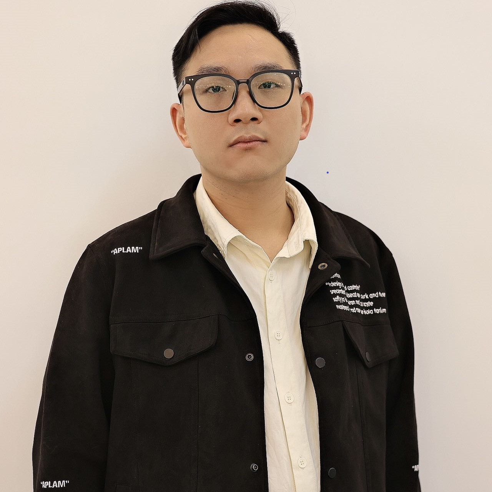

Man Zhou 周满Research Fellow
S-Lab, Wechat: Zm2903256411定制化底层视觉基础框架和理论研究 [PPT-updating] |
 |
| Memory-augmented Deep Unfolding Network for Guided Image Super-resolution. [Code][PDF][BibTex] Man Zhou, Keyu Yan, Jinshan Pan, Wenqi Ren, Qi Xie, Xiangyong Cao International Journal of Computer Vision ( IJCV ), 2022.
|
| Deep Fourier Up-sampling. [Code][PDF][BibTex] Man Zhou, Hu Yu, Jie Huang, Keyu Yan, Deyu Meng, Jinwei Gu, Chen Chang Loy, Chongyi Li Advances in Neural Information Processing Systems ( NeurIPS (spotlight)), 2022.
|
| Spatial-Frequency Domain Information Integration for Pan-sharpening. [Code][PDF][BibTex] Man Zhou, Jie Huang, Keyu Yan, Hu Yu, Xueyang Fu, Aiping Liu, Xian Wei, Feng Zhao European Conference on Computer Vision ( ECCV ), 2022.
|
| Mutual Information-driven Pan-sharpening. [Code][PDF][BibTex] Man Zhou, Keyu Yan, Xueyang Fu, Jie Huang, Zihe Yang, Feng Zhao. IEEE Conference on Computer Vision and Pattern Recognition ( CVPR ), 2022.
|
| Learning Sample Relationship for Exposure Correction. Jie Huang, Man Zhou (Co-first author & corresponding author) , Jie Xiao, kaiwen zheng, Naishan Zheng, Feng Zhao, Zhiwei Xiong IEEE Conference on Computer Vision and Pattern Recognition ( CVPR ), 2023. |
| Learning Semantic Degradation-Aware Guidance for Recognition-Driven Unsupervised Low-Light Image Enhancement. Naishan Zheng，Jie Huang，Man Zhou (corresponding author) , Zizheng Yang，Qi Zhu，Feng Zhao Thirty-Seventh AAAI Conference on Artificial Intelligence ( AAAI ), 2023. |
| Embedding Fourier for Ultra-High-Definition Low-Light Image Enhancement. [Code][PDF][BibTex] Chongyi Li, Chunle Guo, Man Zhou, Zhexin Liang, Shangchen Zhou, Ruicheng Feng, and Chen Change Loy ICLR (oral), 2023.
|
| Panchromatic and Multispectral Image Fusion via Alternating Reverse Filtering Network. [Code][PDF][BibTex] Keyu Yan, Man Zhou (co-first author), Jie Huang, Chengjun Xie, Feng Zhao, Chongyi Li, Danfeng Hong Advances in Neural Information Processing Systems ( NeurIPS (spotlight)), 2022.
|
| Deep Fourier-based Exposure Correction Network with Spatial-Frequency Interaction. [Code][PDF][BibTex] Jie Huang, Yajing Liu, Man Zhou (corresponding author), Keyu Yan, Jinghao Zhang, Yukun Huang, Feng Zhao, Zhiwei Xiong. European Conference on Computer Vision ( ECCV ), 2022. |
| Adaptively Learning Low-high Frequency Information Integration for Pan-sharpening. [Code][PDF][BibTex] Man Zhou,Jie Huang, Chongyi Li, Hu Yu, Keyu Yu, Naishan Zheng, Feng Zhao ACM International Conference on Multimedia ( ACM MM ), 2022.
|
| Normalization-based Feature Selection and Restitution for Pan-sharpening. [Code][PDF][BibTex] Man Zhou, Jie Huang, Keyu Yan, Gang Yang, Aiping Liu, Chongyi Li, Feng Zhao. ACM International Conference on Multimedia ( ACM MM ), 2022. |
| Pan-sharpening with Customized Transformer and Invertible Neural Network. [Code][PDF][BibTex] Man Zhou, Jie Huang, Yanchi Fang, Xueyang Fu, Aiping Liu. AAAI Conference on Artificial Intelligence ( AAAI ), 2022.
|
| Unfolding Taylor’s Approximations for Image Restoration. [Code][PDF][BibTex] Man Zhou, Zeyu Xiao, Xueyang Fu, Aiping Liu, Gang Yang, Zhiwei Xiong. Thirty-fifth Conference on Neural Information Processing Systems ( NeurIPS ), 2021.
|
| Image De-raining via Continual Learning. [Code][PDF][BibTex] Man Zhou, Jie Xiao, Yifan Chang, Xueyang Fu, Aiping Liu, Jinshan Pan, Zheng-Jun Zha. IEEE Conference on Computer Vision and Pattern Recognition ( CVPR ), 2021.
|
| Exposure-Consistency Representation Learning for Exposure Correction. [Code][PDF][BibTex] Jie Huang, Man Zhou (co-first author), Yajing Liu, Mingde Yao, Feng Zhao, Zhiwei Xiong. ACM International Conference on Multimedia ( ACM MM), 2022. |
| Memory-augmented Deep Conditional Unfolding Network for Pan-sharpening. [Code][PDF][BibTex] Gang Yang, Man Zhou (co-first author), Yajing Liu, Mingde Yao, Feng Zhao, Zhiwei Xiong. IEEE Conference on Computer Vision and Pattern Recognition ( CVPR), 2022. |
| PAN-guided band-aware multi-spectral feature enhancement for Pan-sharpening. [Code][PDF] Man Zhou, Keyu Yan, Aiping Liu, Chengjun Xie, Xueyang Fu. IEEE Transactions on Computational Imaging ( TCI ), 2023. |
| Control Theory-Inspired Model Design for Single Image De-Raining. [Code][PDF] Man Zhou, Gang Yang, Keyu Yan, Aiping Liu, Xueyang Fu, Fan Wang. IEEE Transactions on Circuits and Systems II: Express Briefs, 2021.
|
| Effective Pan-Sharpening With Transformer and Invertible Neural Network. [Code][PDF][BibTex] Man Zhou, Xueyang Fu, Jie Huang, Feng Zhao, Aiping Liu, Rujing Wang. IEEE Transactions on Geoscience and Remote Sensing ( TGRS ), 2022.
|
| Effective Pan-sharpening by Multi-Scale Invertible Neural Network and Heterogeneous Task Distilling. [Code][PDF] Man Zhou, Jie Huang, Feng Zhao, Xueyang Fu, Danfeng Hong. IEEE Transactions on Geoscience and Remote Sensing ( TGRS ), 2022. |
| PID Controller-Inspired Model Design for Single Image De-raining. [Code][PDF][BibTex] Man Zhou, Fan Wang, Xian Wei, Rujing Wang, Xue Wang. IEEE Transactions on Circuits and Systems II: Express Briefs, 2021.
|
| Reinforcedet: Object Detection By Integrating Reinforcement Learning With Decoupled Pipeline. Man Zhou, Liu Liu, Rujing Wang. IEEE International Conference on Image Processing ( ICIP ), 2021. |
| ReinforceNet: A reinforcement learning embedded object detection framework with region selection network. Man Zhou, Rujing Wang, Chengjun Xie, Liu Liu, Rui Li, Fangyuan Wang, Dengshan Li. Neurocomputing, 2021. |
| SIS: A New Multi-Scale Convolutional Operator. Man Zhou, Xueyang Fu, Aiping Liu. Journal of University of Science and Technology of China, 2022. |
| Effective Pan-sharpening by Multi-Scale Invertible Neural Network and Heterogeneous Task Distilling. [Code][PDF][BibTex] Man Zhou , Jie Huang, Xueyang Fu, Feng Zhao, Danfeng Hong. IEEE Transactions on Geoscience and Remote Sensing ( TGRS ), 2022. |
| Memory-Augmented Model-Driven Network for Pansharpening. [Code][PDF][BibTex] Keyu Yan, Man Zhou (co-first author), Li Zhang, Chengjun Xie. European Conference on Computer Vision ( ECCV ), 2022. |
| When Pan-sharpening Meets Graph Convolution Network and Knowledge Distillation. [Code][PDF][BibTex] Keyu Yan, Man Zhou (co-first author), Liu Liu, Chengjun Xie, Danfeng Hong. IEEE Transactions on Geoscience and Remote Sensing ( TGRS ), 2022. |
| Improving De-raining Generalization via Neural Reorganization. [Code][PDF][BibTex] Jie Xiao, Man Zhou (co-first author), Xueyang Fu, Aiping Liu, Zheng-Jun Zha. International Conference on Computer Vision ( ICCV ), 2021.
|
| Frequency and Spatial Dual Guidance for Image Dehazing. [PDF][BibTex] Hu Yu, Naishan Zheng, Man Zhou, Jie Huang, Zeyu Xiao, Feng Zhao. European Conference on Computer Vision ( ECCV ), 2022. |
| Exploring Fourier Prior for Single Image Rain Removal. [PDF][BibTex] Xin Guo, Xueyang Fu, Man Zhou, Zhen Huang, Jialun Peng, Zhengjun Zha. International Joint Conference on Artificial Intelligence ( IJCAI ), 2022. |